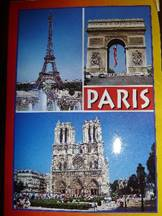
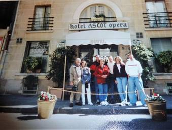
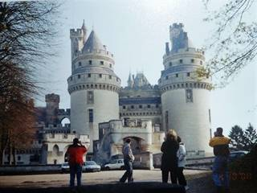
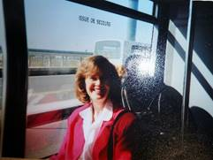
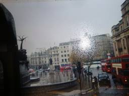
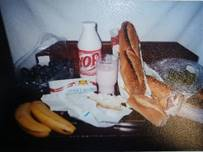

Chapter 48 – Year 2000 – Paris, France & other vacations
Sandi & Terry’s cabin in Star Valley, Wyoming – Sandi & Terry had gone in with another couple (friends from Grantsville) to buy a beautiful cabin among the pines in Star Valley, Wyoming. There were other cabins there and they had a golf course, swimming pool, etc. It was a beautiful area and Sandi and her friend decorated it so beautifully (Sandi mainly as she is very talented at furnishing and decorating) Sandi and Terry invited Ken and I to go up to their cabin with them several times. Ken, Terry & Sandi would go fishing on the stream which was close by, just west of the main road in Island Park. I would go with them and take pictures and read my book. It was so beautiful there in their cabin and on their property. We played games, helped each other fix meals, visited, rode their 4 wheelers in the summer and snowmobiles in the winter. We also went to the cheese factory and bought ice cream and cheese curd.
Sandi and Terry invited all our family one year. I think it was 2000. Shellie, Roy & boys came up too. It was after Christmas, during the holidays. We stayed for several days and we all had a ball. Our family is great together and all work together for meals, cleanup, etc. We had lots of fun playing games, visiting, and riding their 4 wheelers and snowmobiles. Sandi & Terry also had sleds, so we all dressed up in our warm clothes, boots, hats and gloves and went sleigh riding down the road that led just above their home to the end and then others would be on the snowmobiles and pull the ones on the sleds back up the hill. We all had a ball doing that and we had snowball fights, etc. That is the time we found out about the property we bought. Ken had been out on one of their 4 wheelers and had passed by a sign that said property for sale by owner $10,000. Mike told us and we couldn’t believe someone was selling it for only $10,000. The phone number was on the sign. It was filled with quaking aspen trees and was a large corner lot. We called on it and to make a long story short, we were able to purchase it with the goal of building our home on it at a future date.
UPDATE ON HISTORY
Aug 14, 2000
I haven’t taken the time to write down very much lately, but this summer has been a different summer so I wanted to record it. It has been a great summer in many ways, but almost too busy. It started in February when Rich & Lois invited us to share their vacation condo in Island Park with them again. We love going there. We enjoy being with them as they are great people, plus we have so much fun snowmobiling in Yellowstone and all around, going to the clubhouse and swim or sit in sauna or hot tubs, or going site-seeing or playing games and visiting. They have two weeks starting the end of January, but we usually go on the second week.
Paris, France with David & Shauna and Shauna’s parents & brother in April of 2000. Ken and I also went to London, England one day by ourselves. This was a fantastic vacation and another dream come true as I had always dreamed of going to Paris, but never thought I would.
Ken and I stopped at David & Shauna’s home in Idaho Falls on the way to Island Park to be with Rich & Lois in their condo and David asked us how we would like to go with them to Paris, France. We thought he was just kidding, but he has always wanted to go back to France since that’s where he went on his mission. He had been looking on the internet and was able to find tickets for $399.00 round trip. It usually cost $1,750. We became excited. I have wanted to go to Europe, but never thought I would be able to.
 Since we had sold Mom & Dad’s home in Clearfield, after Mom passed away, each of us children received approximately $20,000. We paid off Ken’s truck with the money I received and that took almost $17,000. We decided we wanted to go on a nice vacation with part of it. We had thought about a church history tour as we have never been to Nauvoo or other church history sites, or going on a cruise since we have heard so much about them, but never been on one. But, this was a once in a lifetime opportunity, so, we said “yes”. Shauna’s parents & brother also went with us and we enjoyed being with them. It was a vacation of a lifetime. Shauna spent about 40 hours making all the arrangements - hotel reservations, tours, checking times to visit places, correlating, etc. They came down and we all met and decided where we wanted to go and what we wanted to do and we basically planned it and then she went from there. (Actually, she and David had already done some ground work by watching videos and reading books to find out what was available.) With David speaking the language so well and Shauna making all the arrangements, it was a fantastic trip. The flight over was great. I had a window seat and enjoyed looking at the sites below as well as the beautiful clouds. My first experience with the subway was fun, but hard since we had to carry our luggage and hurry to make the next one as we had to get off and on several times to get to our destination. We had purchased a card to last us while we were in Paris, which we used each time we went on it. I really enjoyed the subways as I had heard so much about them, but never experienced it before. It was fun to ride it and also to watch the people. The hotel was small, but quaint and cute. The elevator was tiny. We opened our window in our room and it looked out onto the street below where I liked to watch the people and to see the pigeons and doves. It was fun to be in this country. After getting settled, we all went to the Notradame Cathedral. It was so beautiful with cut glass windows, all the beautiful carvings, statues, etc. We climbed to the top and looked out over the city. It was magnificent. I hated to leave. We had climbed over 300 steps as we climbed on up to the bell. Going down was harder, especially for Ken. We then went to the Arch of Triumph. I was fascinated with the traffic. It was a circle and cars and vehicles were going every which way, we saw one collision, but thought there would be many. I had never seen anything like it before. While others were looking at the Arch of Triumph, I was looking at the traffic before me. We did walk over (underneath) and I enjoyed looking at it then. The next morning (Saturday) we rode the RNR (train) to Versailles. That is where King Loui the 14th built his palace out 30 miles from the city. I don’t remember how many acres it covers, but it was Hugh - the buildings and the grounds. There are over 300,000 fountains on the grounds. The fountains were not on when we went because they don’t turn them on until the 1st of May. When we got back to Paris, we went to a museum where Napoleon’s tomb was plus knights armor, etc. It was interesting. That night we took a cruise on the Seine River then toured the Eiffel Tower. It was so beautiful looking down over the city from the top of the tower. It was really crowded and as we were loading the elevator, Ken was being pushed back while the rest of us were getting on; I grabbed his arm and hurled him on with us. He was surprised and shocked that I could do that, but I didn’t want to get on without him. We toured beautiful castles and ate delicious French pastries and took lots of pictures.
Ken & I decided we wanted to go to London, England while we were over there. The others didn’t want to, but said for us to “go for it”. That was great too. We left the hotel at 4:30 as we had to meet the group at 6 am. We had directions of where to meet the group that were going to London and so we rode the subway, but when we got off, the directions didn’t make sense, so we saw a shop keeper watching the windows of his shop. We went over and showed him our map. He unlocked his shop and took us in, so he could turn on a light as it was still dark outside. He raised 2 fingers (indicting 2 blocks) and pointed the way. We walked the two blocks, but still couldn’t see the name of the building where we were to meet, so we saw two street cleaners and showed them our map. They indicated that it was just around the corner. We thanked them and found it. We were thankful that there were people on the street who could help us, as we would have hated to miss this trip. We went on the Euro train under the English Channel. It went fast....... We met some wonderful people, on the train, and had fun visiting with them also. It was cold and rainy in England, but we went on a tour bus and had a great time anyway. To see the palace, Big Ben, London Bridge, etc., was exciting. We did get off and ate at a cute little café and had fun talking to the waiter. We saw signs all over that said “To let”. We thought it looked like “toilet” and we wondered why they were advertizing toilets so often. We found out that it meant “To Rent”. They were renting buildings for businesses, apartments or rooms in buildings. We arrived safely back in Paris that night, and were very glad we had gone.
 Thanks to David being able to speak French, we ate good food at good restaurants. I especially loved stopping at the little shops on the street where we bought a special yogurt, delicious cheese and long, delicious bread. We would take them to the hotel and eat the bread & cheese while we drank the yogurt for our meal. We also loved stopping at the sidewalk cafes and ordering chocolate/banana crepes. They were so delicious.
The morning when we were to head for home, we were all packing and then everyone wanted to go to another museum before going to the airport. In packing, Ken and I couldn’t find our passports & tickets. We were frantic and searched everywhere and through our entire luggage. We told the others to go without us and we would meet them later as soon as we found our passports & tickets. We prayed, of course, and finally we found them. We had decided to put them in a special pocket in one of our bags. Wow, were we relieved. We decided to go for a walk as we still had plenty of time. We walked through the park and I loved it, it was so beautiful and fun to be there, especially with my wonderful guy. We stopped at a sidewalk café and bought another chocolate/banana crepe. We met up with David, Shauna, her parents & brother. David & Shauna’s friends and the friend’s brother & his wife, had gone over with us, but didn’t stay with us. They did their own thing, but hadn’t done the planning, the preparing and scheduling like Shauna had done, so things didn’t work out for them like it did for us, and they couldn’t see or do near as much as we did.
(I guess I ran out of time and didn’t record what we did the remainder of the summer)